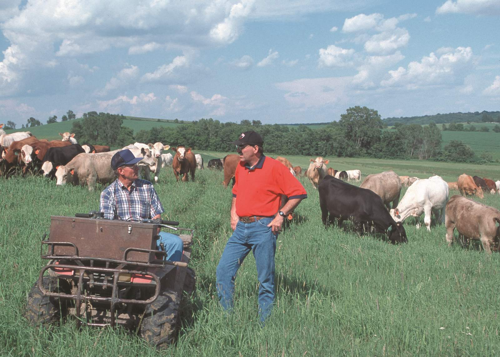
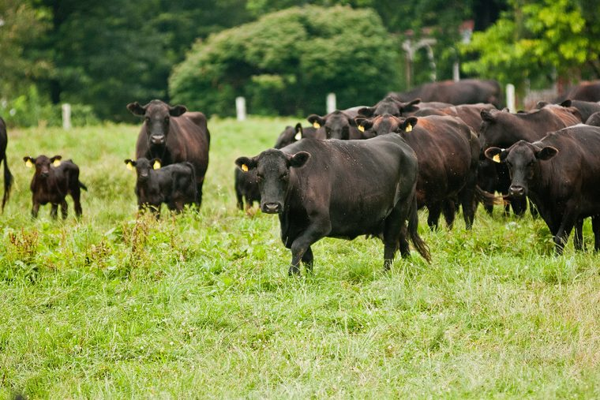
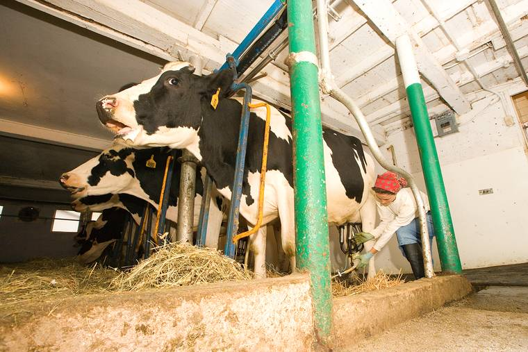
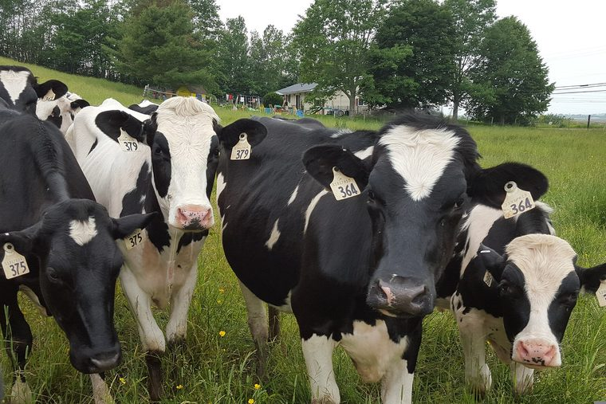
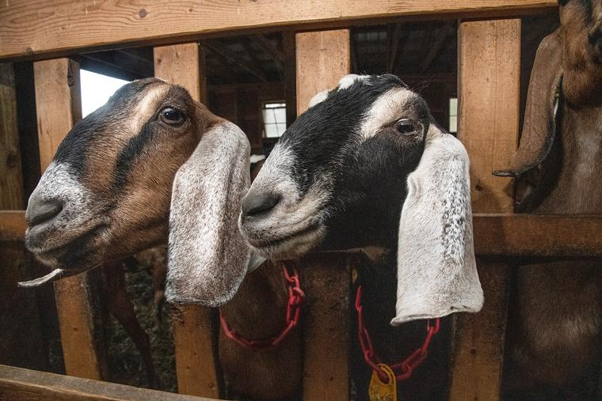
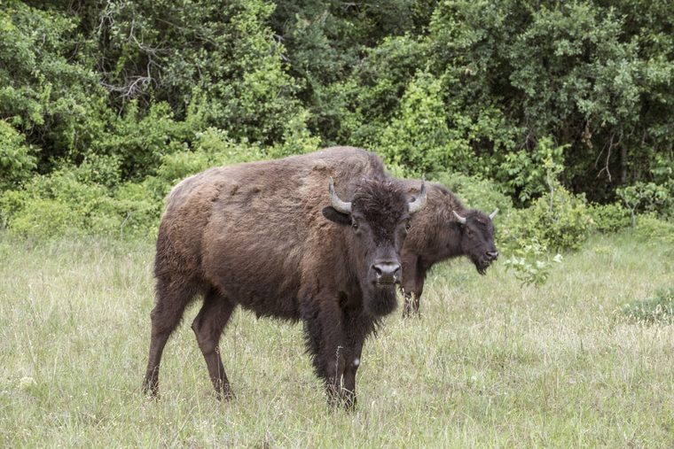
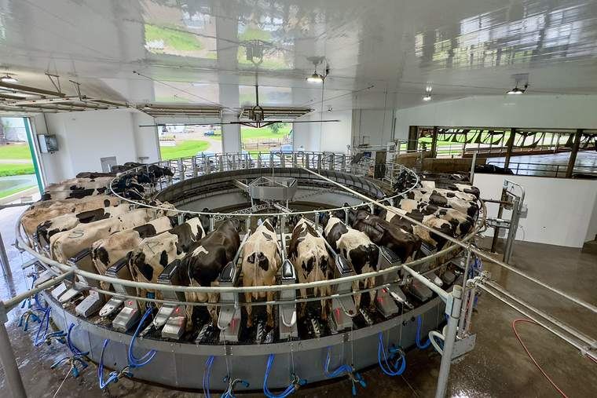

BioPRYN® affiliate lab, Frederic, Wisconsin
One blood sample tells you which cows are open.
Blood pregnancy testing and herd health consulting by mail from Dr. Glenn Pearson, DVM, in Frederic, Wisconsin.
Already sending boxes? Get the mailing address and the forms.
Who the lab works with
The lab works by mail, so it suits any herd that can draw its own samples.
-

Beef cow-calf herds
Check at weaning or a month after the bull comes out, and cull on the answer instead of wintering an open cow.
-

Dairies checking between vet visits
Your own crew draws on your schedule. The open list is back before the next protocol day.
-

Custom heifer growers
Off-site heifers get checked without a vet visit to the lot. The grower's crew draws on a day they are already in the chute.
-

Goat and sheep dairies
Goats and sheep run on the same blood test as cattle, drawn from the jugular vein.
-

Bison ranches
The assay is validated in bison, and nobody wants to palpate one. Draw at the handling system, mail the tubes.
-

Large dairies: records and programs
Records review, preventive programs, biosecurity and disease monitoring with Dr. Pearson, by phone and email.
How it works
-
Step 1
Collect samples
Draw a blood sample from the tail vein (goats and sheep: the jugular vein) with a new needle for each animal. See the tail bleeding how-to guide.
-
Step 2
Fill out the right form
Use the form that matches your samples: cattle and bison, goats and sheep, or BVD PI. All three are just below these steps.
-
Step 3
Ship by midweek
Pack your samples and form well, and ship so they reach the lab no later than Wednesday. Full shipping instructions here.
-
Step 4
Results Thursday
Samples that reach the lab by Wednesday are reported Thursday by email, fax or phone, whichever you mark on the form. That is in time to put open animals on next week's breeding list.
Submission forms
Cattle and bison form (PDF) Goat and sheep form (PDF) BVD PI form (PDF)
More animals than lines on the form? Print a second copy. Running low on tubes or needles? Order more on the same form.
First box? Please call our office before your first submission, at (715) 653-2201, or send the new client form. We'd like to meet you. A call settles which supplies you need.
What your report tells you
Your report lists each animal as pregnant, open or recheck. A recheck usually comes with a note on when to sample her again.
When can I test?
Cows and bison from 28 days after breeding, virgin heifers from 25, goats and sheep from 30. For goats and sheep, if the buck or ram ran with them, enter the day he came out.
For a cow that has calved. Cows should be at least 90 days since calving.
Days from shipping to arrival at the lab. Overnight means a next-day carrier.
Cows and bison can be sampled 28 days after breeding, virgin heifers at 25, goats and sheep at 30. If that date is today or past, she can be sampled now.
Boxes that reach the lab Monday to Wednesday are in that Thursday's report. With Priority Mail, usually 2 days, ship by Monday. With overnight shipping, ship by Tuesday. A box shipped later is in the next week's report.
Priority Mail usually takes 2 days but is not guaranteed. Shipping a day earlier, or overnight, leaves a margin. The Postal Service does not deliver on federal holidays, and next-day carriers do not deliver on New Year's Day, Memorial Day, Independence Day, Labor Day, Thanksgiving or Christmas, or on the Friday or Monday when one of those is observed. A box that would arrive on a weekend or one of those days counts from the next lab day. If the report Thursday is a holiday, call (715) 653-2201 for that week's report day.
What the lab does for your herd
- Pregnancy testing
A safe and accurate blood test for pregnancy in cattle, bison, goats and sheep.
- BVD PI testing
Finds persistently infected (PI) cattle and bison with one ear notch or blood sample.
- Herd health consulting
Dr. Pearson works from your herd health and treatment records and your lab results.